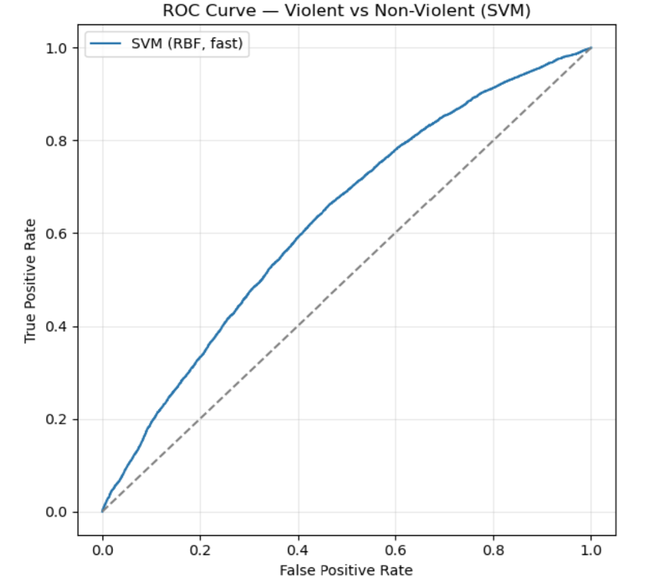

🎯 Overview
Can we predict whether a reported crime in Houston will be violent or non-violent based on when, where, and in what context it occurs? This project uses a Support Vector Machine with an RBF kernel to classify incidents from the Houston Police Department's 2024 NIBRS public dataset. The goal is to explore whether temporal patterns (hour, day, month), geographic location (latitude, longitude), and contextual factors (premise type, police beat, ZIP code) carry enough signal to separate violent from non-violent offenses.
📋 Data & Target Variable
The dataset contains over 250,000 incidents from Houston's NIBRS reporting system. The binary target classifies each incident as Violent (1) or Non-Violent (0) based on four strict NIBRS codes consistent with the UCR definition of violent crime:
| NIBRS Code | Offense Type |
|---|---|
| 09A | Murder & Non-Negligent Manslaughter |
| 11A | Forcible Rape |
| 120 | Robbery |
| 13A | Aggravated Assault |
- Non-violent incidents: 225,340 (~90%)
- Violent incidents: 24,829 (~10%)
- Split: 75% train / 25% test with stratification
class_weight="balanced" to prevent ignoring the minority violent class.
⚙️ Feature Engineering
Raw incident records were transformed into model-ready features:
- Cyclic time encoding: Hour of day converted to sin/cos components so 23:00 and 00:00 are neighbors on the circle
- Calendar features: Month and day-of-week extracted from occurrence date
- Spatial: Raw MapLongitude and MapLatitude coordinates
- Context: Premise type, police Beat, and ZIPCode — one-hot encoded
- Result: 335 total input columns (44 Premise + 124 Beat + 160 ZIPCode + numeric features)
🤖 Model: SVM with RBF Kernel
We use a Support Vector Machine with a Radial Basis Function (RBF) kernel, which maps observations into a higher-dimensional space where non-linear patterns become linearly separable.
- Kernel: RBF — learns curved, flexible decision boundaries
- C = 10: Regularization parameter controlling margin softness
- γ = "scale": Kernel bandwidth set automatically based on feature variance
- class_weight = "balanced": Upweights the minority violent class
If the value is positive → predict Violent. If negative → predict Non-Violent. Even with an RBF kernel, this linear boundary exists in the high-dimensional feature space created by the kernel transformation.
📊 Results
The model was evaluated on the held-out test set of 62,543 observations:
- Accuracy: 58.5% overall
- ROC AUC: 0.63 — moderate discriminative ability
- Violent crime precision: ~14% — many false positives
- Violent crime recall: ~61% — catches more than half of actual violent incidents
The high recall indicates the model is sensitive to violent crime patterns, but the low precision means it also flags many non-violent incidents. This trade-off reflects the inherent difficulty of the problem.

Confusion matrix showing classification results across 62,543 test observations.

ROC curve with AUC of 0.63 — meaningful separation above the random baseline.
🔍 Interpretation
An AUC of 0.63 means that given a randomly selected violent and non-violent case, the model assigns a higher risk score to the violent one 63% of the time. While not strong enough for deployment, this demonstrates that temporal, spatial, and contextual features carry real predictive signal about crime severity.
- Violent and non-violent crimes overlap heavily in time, location, and context — they happen at similar hours, in similar places
- The 10% base rate makes the classification inherently challenging; even a well-fitted model struggles with such imbalance
- The model performs well on the majority class (non-violent) but detecting violent incidents remains difficult due to feature overlap
⚠️ Limitations
- Computational cost: RBF kernel required subsampling to 50K records — full dataset training may improve performance
- Class imbalance: 90/10 split limits precision on the violent class even with balanced weights
- Feature limitations: Offense severity likely depends on factors not in the data (suspect history, weapon presence, victim relationship)
- Single model: Ensemble methods or gradient boosting might capture additional non-linear patterns
📁 Files
Download the Jupyter notebook or explore the raw NIBRS dataset.